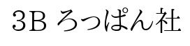
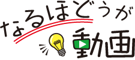

Toggle navigation

中学校教材
小学校教材
サポート情報
各種ダウンロード・サポート
教材訂正情報
よくある質問
お問い合わせ
会社概要
セキュリティポリシー
個人情報の取り扱い
サイトマップ
もくじ
1
漢字 読み方と意味
1
漢字 部首と画数
1
漢字 同じ読み方の漢字
2
熟語 類義語と対義語
2
熟語 熟語の組み立て
2
熟語 三字熟語と四字熟語
3
語句 慣用句
3
語句 故事成語とことわざ
5
指示語と接続語
14
詩 表現技法
15
短歌 句切れと表現技法
16
俳句 季語と切れ字
17
歴史的仮名遣い
20
漢文の読み方
21
文の組み立て 言葉の単位
21
文の組み立て 文節どうしの関係
22
自立語
23
動詞の活用
24
付属語
文法のまとめ
まぎわらしい品詞・用法
25
敬語の種類
25
敬語の誤用
27
手紙の書き方
28
原稿用紙の使い方
29
グラフの読み取り方

【先生方へ】
QRコードやURLから，下のような解説ページが開きます。スマートフォンだけでなく，タブレット端末やパソコンからも見られます！
三年・理科・イオン
ボルタ電池
金属板の表面積と電圧の関係
この動画は現在公開準備中です。
目次に戻る
再生
一時停止
最初から
大量のデータ通信が発生いたします。Wi-Fi環境でのご利用を推奨いたします。
この動画には音声があります。音量にご注意ください。
当サイトの内容、動画等の無断転載・無断使用を固く禁じません。
一覧へ戻る